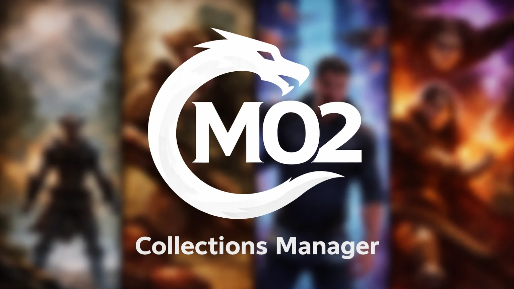

Collections Manager
Collections Manager brings collection downloads, installation choices, mod order, portable collections and modding tools into Mod Organizer 2. You review choices in MO2, then let one ordered install queue work through the collection.

Get started
- Close MO2 before updating the plugin. Install the complete matching package into MO2’s plugins folder, keeping the collectionsmanager folder and native files together.
- Restart MO2 and open Collections Manager from Tools. Connect your Nexus account, select a collection or local collection ZIP, and review its contents.
- In Install, review required and optional mods, external downloads, installer choices and instructions. Choose Start when ready. Use Stop to stop pending work, then wait for the active installer to finish before resuming.
- Use Needs attention and Fix Failed for downloads, installer choices or setup that still need your input. Skipped items remain unfinished.
Settings
| Setting | What it changes |
|---|---|
| Nexus account | Premium permits the supported automatic Nexus download flow. Free accounts keep the website’s manual download steps; local archives can still be selected. |
| Install options | Control download concurrency, installation and activation choices. Lowering concurrency does not cancel transfers already running. |
| Programs | Add or configure a tool, review its archive, and choose Get to install. Saving setup or importing a library saves instructions; it does not install or run a tool. |
| Settings | Choose window size, remembered size, appearance and icon preferences. The interface follows MO2’s theme. |
Choose a guide
- First collection: account setup, download choices and installation.
- Programs: Add wizard, archive review, launchers and sharing program libraries.
- FOMOD installers: review and reuse installer choices.
- Create a portable collection: mod sources, bundled files and settings.
- Mod order: review file-conflict rules before applying an order.
Limits and troubleshooting
- Use the complete matching Python plugin, native engine and FOMOD helper. Mixing parts from different builds is rejected.
- A configured program or an existing folder does not prove a verified installation. Resolve Needs attention and launcher-pending states before relying on it.
- Collection requirements management, automatic dependency-chain resolution and isolated collection revisions are not completed features in this build.
- With a recognized, checked Runtime Swapper installation, CM can check SKSE against the intended launch runtime. A collection installs the requested Swapper before SKSE and rechecks reused SKSE. Changed, missing or ambiguous Swapper evidence stops for review. Real swapping and game launching are not validated by these setup checks.
- Large downloads, real installer interactions and gameplay need testing in your own MO2 setup. Keep independent backups before applying collection-wide changes.
Existing project and requirement links
Credits
Created by Supertron for Mod Organizer 2, with Nexus Mods services, a Rust engine and a PyQt interface. Collections Manager code is GPL-3.0-only; third-party components retain their own licenses. The matching source and download include THIRD-PARTY-NOTICES and dependency license files. Original project artwork and attribution remain with those notices.